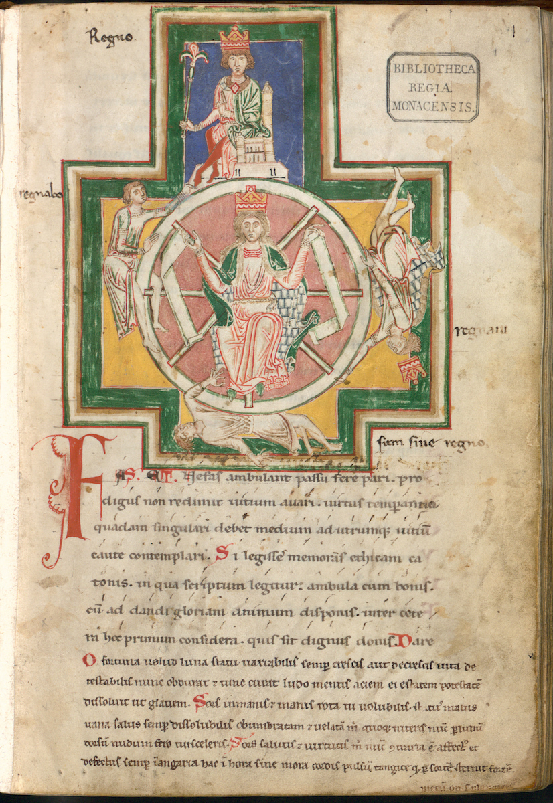
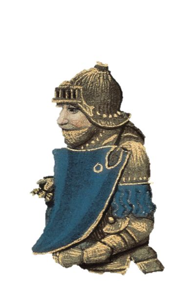
🔍 Ampliar| LITERATURA CLÁSICA | LITERATURA MEDIEVAL |
|---|---|
| La naturaleza se explica a partir de mitos, relatos fabulosos que dan cuenta del origen de las cosas. | La naturaleza se considera creación de Dios, vulnerada por el pecado del hombre. |
| Predomina una mentalidad fatalista, según la cual el hombre, mortal, cumple un destino, voluntad de los dioses, inmortales. | Predominio del espíritu religioso como principio informador de la vida: devociones, leyendas piadosas... |
| Honda admiración hacia lo aristocrático; la literatura ensalza a los héroes, personajes con cualidades extraordinarias, dignos de ser imitados. | Poderoso arraigo de lo popular; la literatura responde a las tradiciones y necesidades identitarias del pueblo. |
| Se rinde culto a lo bello, lo bueno y lo verdadero, virtudes con las que se logra equilibrio y armonía. | Concepción de la belleza como un bien caduco que nos recuerda que lo único eterno es Dios. |
| Superación de la muerte; el tiempo no se concibe desde un punto de vista lineal, sino cíclico, por lo que el mundo se construye sobre el eterno retorno de valores que se pierden y recuperan continuamente. | Presencia de la muerte; el mundo se suele contemplar como un valle de lágrimas, un lugar de tránsito hacia la bienaventuranza eterna o el castigo eterno. |
| Se desarrolla el pensamiento científico, filosófico y político, dentro de un espíritu racional, en el que destacan Platón y Aristóteles. | Se desarrolla el pensamiento cristiano, con un espíritu moral, en el que destaca la escolástica, cuyas obras sirven a la edificación del ser humano. |
| La influencia de la cultura griega sobre la romana se percibe con fuerza en la literatura latina. | Influencias extranjeras, sobre todo árabes y orientales, que dan un sabor especial a las obras. |
| El griego y el latín se convierten en las lenguajes de cultura de Occidente, por encima del idioma propio de cada territorio. | El griego y, sobre todo, el latín siguen teniendo un enorme peso en todos los ámbitos de la cultura, pero cobran protagonismo las lenguas nacionales. |
| Los géneros literarios son variados y originales: épica, tragedia, comedia, lírica, historia, oratoria. Nacen en Grecia y pasan a Roma, que crea la sátira. | Los géneros literarios son muy limitados, predomina la épica y la lírica amorosa o religiosa. |
| El sistema de versificación se basa en la cantidad vocálica, que genera ritmos. | El sistema de versificación se basa en el cómputo silábico y en la rima. |
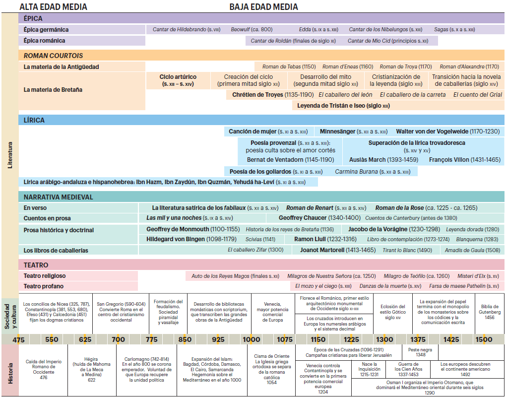
🔍 Ampliar Cronología¿QUÉ NOS ENSEÑA LA CULTURA MEDIEVAL? ¿POR QUÉ SIGUE FASCINÁNDONOS HOY EN DÍA?
¿QUÉ NOS ENSEÑA LA CULTURA MEDIEVAL? ¿POR QUÉ SIGUE FASCINÁNDONOS HOY EN DÍA?
a «Un rey no tiene amigos; solo partidarios y detractores». Comenta estas palabras de John Falstaff, consejero de Enrique. ¿Qué nos dicen acerca de la crisis del poder real?
b Durante la Edad Media, Europa se identificó con la cristiandad, sustentada sobre la Iglesia, autoridad religiosa; y la monarquía, autoridad secular. ¿Cómo se manifiesta este hecho en la ceremonia de la coronación?
c La inseguridad trajo consigo la decadencia del comercio. El valor de las tierras creció y los reyes empezaron a pagar con ellas a los nobles que defendían sus dominios. ¿Qué comportó esta decisión? Relaciónalo con el feudalismo.
d En este contexto, ideales como el honor y la lealtad cobran mucha importancia. ¿Por qué razón? ¿Quién los representa en la película?
e La violencia y la guerra se convierten en realidades cotidianas. ¿En qué escenas se perciben con más claridad? Observa que la paz, cuando existe, es frágil y engañosa, ¿qué dice Felipa a su hermano el rey mientras pasean?
f ¿Qué tipo de literatura cabe esperar de una sociedad como la que hemos descrito? Piensa, por ejemplo, en los poemas épicos, los relatos caballerescos, la lírica provenzal o las danzas de la muerte. Coméntalo.
CRONOLOGÍA
El período suele dividirse en dos partes: la Alta Edad Media (hasta el final del primer milenio) y la Baja Edad Media (a partir del siglo XI)
¿Cómo surgió el término Edad Media?
Fueron los humanistas italianos quienes crearon este concepto para caracterizar, con cierto desdén, una etapa entre dos épocas: la Antigüedad clásica y la Edad Moderna, sugiriendo, de modo erróneo, un paréntesis de diez siglos en los que la política, la sociedad, la economía, el pensamiento y la cultura se plegaron sobre sí mismos interrumpiendo el desarrollo del continente. Hoy, por el contrario, se admite que el Medievo, con sus luces y sus sombras, fue un momento crucial en la conformación del espíritu europeo.
LA CRISTIANDAD
La Edad Media supuso el triunfo del cristianismo en todo el continente y generó las identidades nacionales que han dado lugar a los distintos estados, asociados casi siempre a una lengua vernácula propia y a una herencia latina común. Pero fue también la época que vio el nacimiento y la gran expansión del islam (Mahoma murió en el 632 de la era cristiana), religión que, junto con el judaísmo, hizo aportaciones fundamentales a la cultura europea medieval.
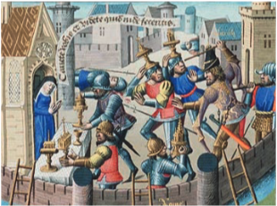
🔍 AmpliarLA CRISTIANDAD
La fragmentación territorial que impusieron los pueblos invasores —ostrogodos y lombardos, en Italia; anglos y sajones, en Gran Bretaña; francos y borgoñones, en Francia; alamanes, turingios y bávaros, en Alemania; alanos, en Portugal; suevos, vándalos y visigodos, en España— hizo que fuera imposible mantener la administración centralizada y la unidad cultural que había garantizado hasta entonces la prosperidad.
Muchos de los logros alcanzados por los romanos se hundieron junto con su civilización.:
Para frenar el declive era preciso encontrar un fundamento espiritual sobre el que cimentar un nuevo sistema político y recuperar la estabilidad perdida: la cristiandad. El objetivo era hacer de Europa un imperio espiritual articulado en dos niveles:
A la cabeza de la primera se encontraría el papa; liderando la segunda, el emperador. Uno ostentaría la autoridad moral; el otro, la jurídica. La realización concreta de esta idea fue el Imperio de Carlomagno (768-814), el monarca más influyente de toda la Edad Media.
EL IMPERIO CAROLINGIO
La idea sobre la que Carlomagno (768-814) construyó su Imperio —unión de las culturas germánica, romana y cristiana como fuente de la moral y del derecho— gozó de un inmenso prestigio y fue adoptada como modelo por la mayoría de los monarcas posteriores, confirmándose definitivamente como la base de la civilización europea.
EL FEUDALISMO
Las nuevas invasiones habían generado un clima de inseguridad y miedo. Se sabía que los reyes no tenían bastante poder para garantizar la seguridad de sus súbditos, por eso se hizo frecuente acudir a grandes señores para recibir protección a cambio de prestar determinados servicios asumiendo el papel de vasallo.
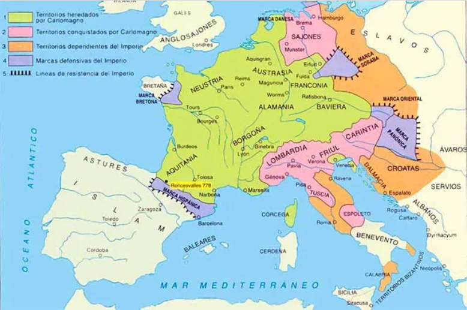
🔍 Ampliar MapaLA SOCIEDAD MEDIEVAL
La sociedad tenía un carácter estamental y estaba fuertemente jerarquizada:
LA CULTURA
La cultura se concentraba en los monasterios, donde vivían los monjes, hombres que se apartaban del mundo para santificarse mediante la oración y el trabajo. La vida común de estos monjes da pie a nuevas manifestaciones artísticas como el canto gregoriano o el estilo románico y gótico. El fervor religioso hizo que determinados lugares (Roma, Jerusalén, Santiago de Compostela) se convirtieran en importantes centros de peregrinación, lo cual fomentó un vigoroso intercambio cultural.
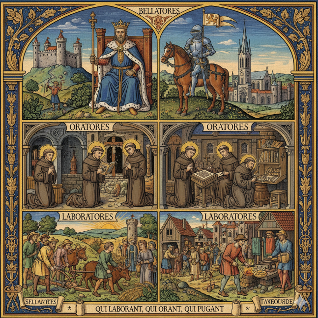
🔍 Ampliar EstamentosEL NACIMIENTO DE LAS LITERATURAS NACIONALES
El hecho cultural más importante del comienzo de la Edad Media es la aparición de las lenguas europeas: célticas como el irlandés, el galés o el bretón; germánicas como el inglés, el alemán, el danés, o el noruego; o románicas como el francés, el provenzal, el italiano, el portugués, el gallego, el catalán o el castellano, entre otras. Ellas serán la base de las futuras literaturas nacionales, que ya ofrecen obras propias a partir del siglo X.
A diferencia de Roma, que heredó la tradición griega, la literatura medieval, por lo menos al principio, no entronca con los clásicos, sino que surge, más bien, ligada a los estamentos sociales:
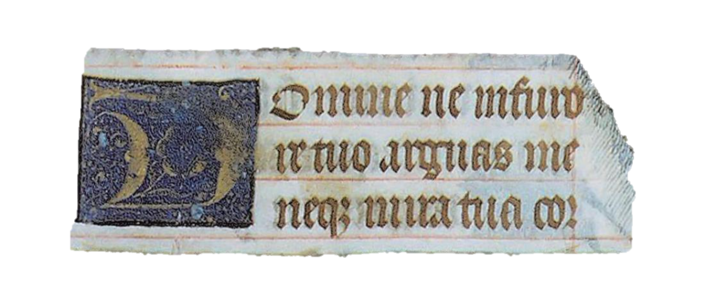
🔍 Ampliar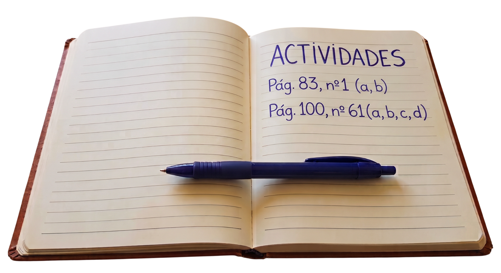
Página 83: ejercicio nº 1 (apartados a, b) — lectura y análisis del fragmento del Cantar de Roldán sobre el vínculo feudo-vasallático y los ideales caballerescos.
Página 100: ejercicio nº 61 (apartados a, b, c, d) — comentario del fragmento del Cantar de los nibelungos y comparación con los cantares de gesta.
¿Qué es una epopeya?
La Edad Media fue la época dorada de la epopeya: poemas narrativos compuestos entre los siglos VIII y XIII, que cuentan las hazañas de héroes movidos por el valor y la lealtad, en los que se entremezclan historia, leyenda y mito.
CARACTERÍSTICAS
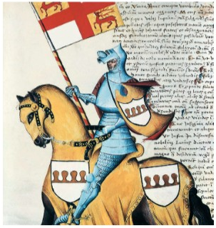
🔍 AmpliarLA ÉPICA Y LOS HÉROES EN EL CINE
Las primeras manifestaciones literarias en lengua vulgar que conservamos se produjeron en lugares como Escandinavia, Islandia o los reinos germánicos: zonas en las que el latín había tenido muy escasa presencia. Son las llamadas sagas: narraciones de gran diversidad que van desde la leyenda heroica y la crónica regia hasta los relatos de conquistadores, guerreros y colonos. Estas sagas en prosa, algunas de las cuales se remontan al siglo VIII, generaron una rica tradición de poesía épica cuyas obras maestras son dos poemas anónimos: el sajón Beowulf y el germano Cantar de los nibelungos.
LA ÉPICA GERMÁNICA: BEOWULF
Argumento
La acción se divide en dos grandes partes:
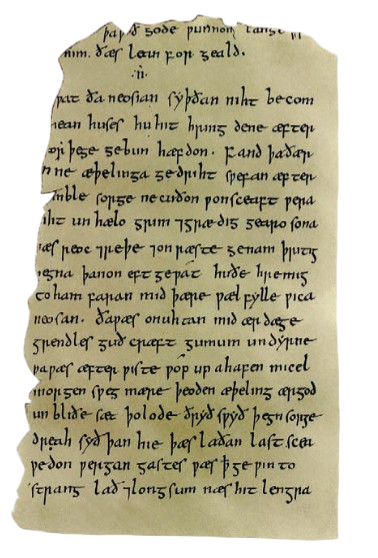
🔍 Ampliar ManuscritoLA ÉPICA GERMÁNICA: CANTAR DE LOS NIBELUNGOS
Argumento
La trama argumental se divide en dos grandes bloques de igual extensión:
Primera parte. Sigfrido, héroe de la estirpe de los Welsas, descendientes directos de Odín, se enamora de la princesa burgundia Krimilda, hermana del rey Gunther. Este le pide, a cambio de la mano de su hermana, que le ayude a conquistar a la indomable Brunilda, reina de Islandia, que hasta el momento ha rechazado a todos sus pretendientes y solo se casará con aquel que la supere en una serie de pruebas de fuerza y habilidad. Sigfrido asume la figura de Gunther, gracias a un yelmo encantado con el que puede transformar su aspecto a voluntad, y vence a Brunilda. Se celebran entonces ambas bodas, pero quince años después Krimilda descubre a Brunilda el engaño de que fue objeto.
Esta se venga de Sigfrido haciendo que el guerrero Hagen lo hiera de muerte durante una partida de caza. En su juventud, Sigfrido había matado al dragón Fafnir y se había bañado en su sangre, lo que le hizo invulnerable, salvo en un único punto de su espalda. El traidor, que está al tanto de este secreto, espera a que el héroe se incline a beber en un estanque y lo atraviesa con su lanza.
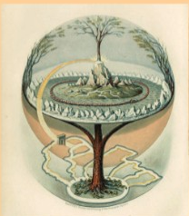
🔍 AmpliarSegunda parte. Krimilda, deseosa de venganza, se casa con Atila, rey de los hunos. Doce años más tarde, su hermano Gunther y Hagen visitan la corte de los hunos y Krimilda convence a su esposo para que ataque a los burgundios; ella misma decapita a Hagen. Su venganza, sin embargo, se vuelve en su contra: Hildebrando, caballero de Atila, juzga indigna la muerte de Hagen y la ejecuta por ello.
Trascendencia de la obra
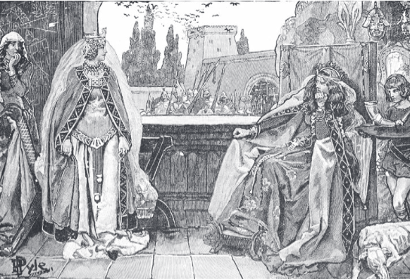
🔍 Ampliar GrabadoLA ÉPICA ROMÁNICA
Conjunto de cantares de gesta escritos en lenguas romances.
Los cantares suelen agruparse en ciclos, conjuntos de relatos que abordan la figura del héroe o de su linaje en diferentes momentos:
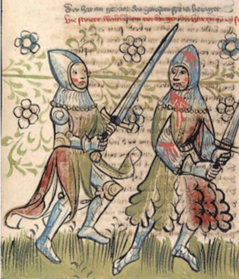
🔍 AmpliarLA ÉPICA ROMÁNICA: CANTAR DE ROLDÁN
La técnica del poema, rica en descripciones y epítetos épicos, tiene un evidente carácter oral y es de una solemne elegancia. Parece probado que el poema circuló en las cortes nobiliarias de Francia e Inglaterra durante mucho tiempo, recitado por juglares para enardecer a los guerreros en vísperas de una batalla.
Se trata de una recreación literaria de un suceso histórico ocurrido en el año 778: la derrota que los vascones infringieron a las tropas de Carlomagno en el valle pirenaico de Roncesvalles. En el poema, esta derrota se atribuye a los musulmanes, para presentar al emperador y a sus doce pares (los más nobles caballeros de Francia, todos sobrinos suyos) como defensores de la cristiandad.
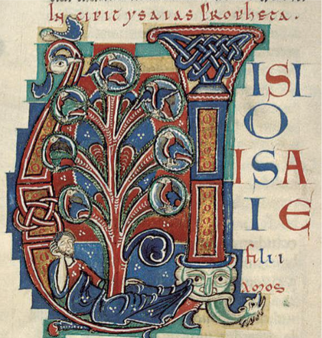
🔍 AmpliarArgumento
Marsil, rey de Zaragoza, el único caudillo musulmán que aún no se ha sometido a Carlomagno, le envía un mensaje pidiendo condiciones de paz. El emperador lo acepta y, siguiendo el consejo de Roldán, su mano derecha, encarga a Ganelón, padrastro de este, que lleve a Zaragoza su propuesta. Ganelón obedece, pero, como odia a Roldán, decide traicionar a su patria y pacta con Marsil un ataque a la retaguardia carolingia, mandada, precisamente por el héroe.
El ataque se produce en el desfiladero de Roncesvalles y, a pesar de su desesperada defensa, los franceses son aniquilados. Solo un momento antes de morir, Roldán, utilizando el olifante, un cuerno de marfil, se decide a llamar al emperador, que, desesperado, retrocede, ataca y vence al ejército de Marsil. El traidor Ganelón es ajusticiado.
Estructura
El cantar se divide en cuatro partes de desigual amplitud:
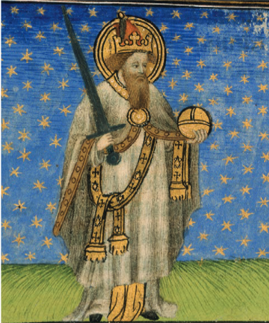
🔍 Ampliar CarlomagnoSingularidades
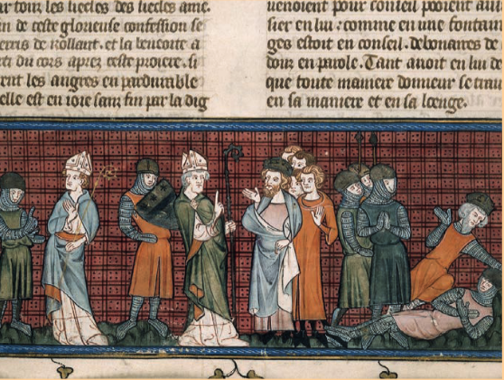
🔍 Ampliar Miniatura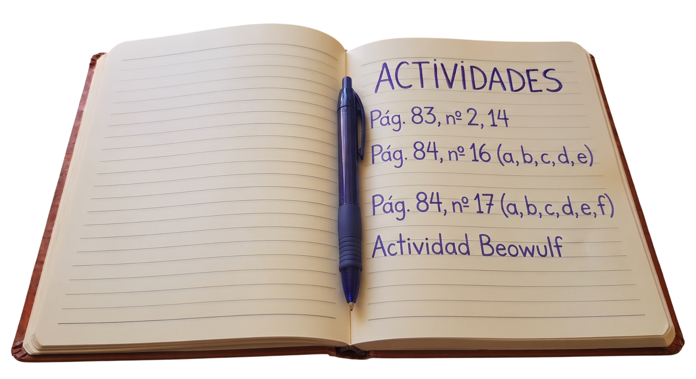
Página 83: ejercicios nº 2 y nº 14.
Página 84: ejercicio nº 16 (apartados a, b, c, d, e) — análisis del Cantar de los nibelungos (aventura XVI, muerte de Sigfrido).
Página 84: ejercicio nº 17 (apartados a, b, c, d, e, f) — análisis del Cantar de Roldán (batalla de Roncesvalles y el olifante).
Actividad Beowulf: material complementario en Aules.
En el siglo XII surge un tipo de narración culta, en verso → roman courtois(novela cortés).
La decadencia de la épica oral no acabó con las hazañas caballerescas. La naciente nobleza ansiaba verse reflejada en las artes de muy diversos modos. Protagonista de los poemas épicos anónimos, cuando su poder estuvo afianzado quiso ser también protagonista y destinataria de otro tipo de obras ya no siempre anónimas, y pensadas más para la lectura en voz alta que para el recitado juglaresco, lo cual indica la existencia de un público letrado. Se trata de literatura escrita para una minoría selecta. Así nacieron las novelas de caballerías.
A diferencia de los personajes que protagonizan la epopeya, el héroe de los poemas caballerescos combate, además de por su pueblo, por su religión o por su rey, por su propio honor y por su dama.
| LA EPOPEYA MEDIEVAL | LA LITERATURA CABALLERESCA | |
|---|---|---|
| Origen | Popular: anónima, transmisión oral. | Culto: autor individual, transmisión escrita. |
| Modo de expresión | Verso irregular, largo, con rima asonante. | Verso regular (octosílabo o eneasílabo), con pareados de rima consonante. |
| Temas | Hazañas bélicas con grandes batallas en las que se decide el destino de un pueblo. | Aventuras que exigen la superación de pruebas que forjan el carácter del héroe. |
| Protagonista | Héroe-caudillo en el que se proyectan los valores e ideales de una nación. | Héroe-caballero que actúa en solitario por motivos personales. |
| Personajes femeninos | Sin importancia en la acción. | Elemento fundamental de la acción. |
| Propósito del héroe | Garantizar la supervivencia de su pueblo, conquistar o reparar el honor. | Alcanzar la perfección moral y el reconocimiento social. |
LA MATERIA DE LA ANTIGÜEDAD
En el siglo XII aparecen en Francia cuatro obras narrativas
Obras:
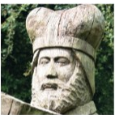
🔍 AmpliarLA MATERIA DE BRETAÑA
Se basa en mitos bretones y leyendas de origen celta. Se distingue entre el ciclo artúrico y la leyenda de Tristán e Iseo.
EL CICLO ARTÚRICO
El eje central del ciclo artúrico es la vida del rey Arturo y las aventuras de los caballeros de la Mesa redonda: Perceval (Parsifal), Lancelot (Lanzarote), Galahad, Ywain, Gawain, etc.
El autor que dio forma definitiva a esta leyenda es Chrétien de Troyes (1135-1190), buen conocedor del latín, y especialmente de Ovidio y escritor al servicio de los condes de Champaña.
La historia que los articula, y que se va contando a lo largo de toda la serie, es la historia del rey Arturo, casado con Ginebra, quien se enamorará de Lancelot al tiempo que otros caballeros de Camelot viven sus propias aventuras galantes hasta que se comprometen en la búsqueda del grial, que suele identificarse con el cáliz de la última cena de Jesús o la copa que recogió su sangre cuando fue crucificado.
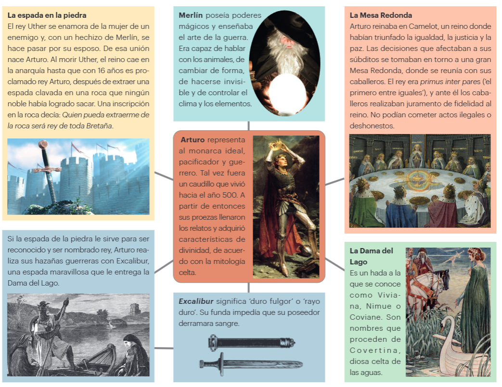
🔍 Ampliar Ciclo ArtúricoLA LEYENDA DE TRISTÁN E ISEO
En cuanto a la leyenda de Tristán e Iseo, es el prototipo de la pasión amorosa, incontrolable y trágica. Tristán e Iseo toman un bebedizo que les hace enamorarse, a pesar de que ella es la prometida del rey Marco de Cornualles y él es su sobrino.
La obra, bella y llena de emoción, recrea las tradiciones de la cultura celta, aunque también recupera motivos clásicos (mito de Píramo y Tisbe o historia de Paris).
Argumento
Tristán, un valeroso caballero, e Iseo, la rubia esposa del rey de Cornualles, se enamoran después de tomar, contra su voluntad, un filtro mágico que une a quienes lo beben. La joven lucha entre la fidelidad a su marido y la pasión amorosa por Tristán, que finalmente se aleja de la corte.
Lejos de su amada, llega a la Pequeña Bretaña, donde la hija del rey, también llamada Iseo, «de las blancas manos», se enamora de él. Cuando en una aventura caballeresca se halla herido de muerte, llama en su ayuda a Iseo «la rubia», porque solo ella puede salvarlo.
La joven acude en un barco de blancas velas, como habían concertado, pero Iseo, «de las blancas manos», movida por los celos, dice a Tristán que las velas son negras, lo que significa que Iseo «la rubia» no viene en el barco. Tristán muere de dolor e Iseo «la rubia» llega tarde, solo para expirar junto al cadáver de su amado.
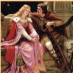
🔍 Ampliar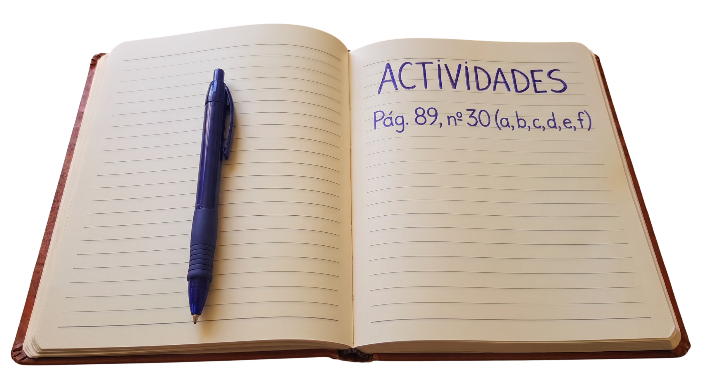
Página 89: ejercicio nº 30 (apartados a, b, c, d, e, f) — lectura y comentario comparado de los fragmentos de Tristán (Gottfried von Strassburg) y El caballero de la carreta / Lanzarote (Chrétien de Troyes).
LA CANCIÓN DE MUJER
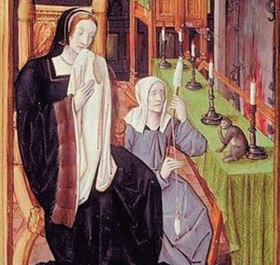
🔍 Ampliar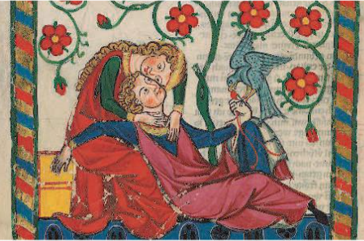
🔍 Ampliar MiniaturaLA POESÍA PROVENZAL
Durante los siglos XII y XIII surge en las cortes del sureste francés un tipo de poesía culta en lengua provenzal compuesta para ser cantada al son de una melodía.
El autor de estas composiciones, el trovador, es un noble, un príncipe o incluso un rey que, por diversión, escribe los versos y la música de sus poemas.
Para facilitar la transmisión y el aprendizaje de los textos se recurre a cancioneros, libros en los que se recogen las obras de uno o varios trovadores, junto con la notación musical que permite cantarlas. Los más antiguos pertenecen a la segunda mitad del siglo XIII. Algunos ofrecen también interesantes textos en prosa con datos biográficos del trovador (las vidas) o comentarios a algún poema concreto (las razós).
El tema de la lírica provenzal es el amor cortés. Se trata de un amor entendido como servicio que el caballero (vasallo) presta a una dama (señora) adornada de una singular belleza, que suele adaptarse a una descripción tópica: cabellos rubios, ojos y piel claros y manos delicadas. Pertenece a una clase superior (amarla es una osadía) y se muestra inicialmente desdeñosa e incluso cruel, por lo que el enamorado experimenta un profundo sufrimiento. Además, es un amor clandestino, pues la dama está casada, y discreto, ya que no debe ser descubierto por el marido (el celoso) o por los aduladores de este. A pesar de todo, sus sentimientos purifican y elevan al enamorado, que se perfecciona para merecer a la dama.
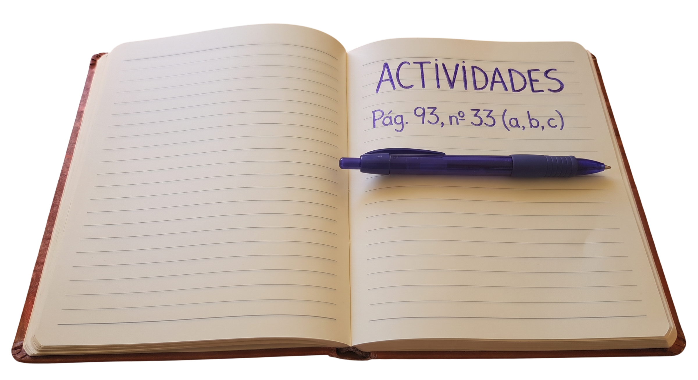
Página 93: ejercicio nº 33 (apartados a, b, c) — análisis de los poemas de Bernart de Ventadorn, Guillermo de Aquitania, Dante Alighieri (Divina Comedia) y Francesco Petrarca (Cancionero) en torno al tópico del amor cortés y el dolce stil novo.
¿Qué es un cuento?
Los cuentos son narraciones breves en prosa que relatan una acción sencilla, normalmente dividida en tres partes: inicio, nudo y desenlace. Suelen estar protagonizados por pocos personajes, cuya personalidad no experimenta grandes cambios, y el lugar y el tiempo no suelen detallarse con precisión.
Los cuentos medievales
Estas narraciones solían proceder de dos fuentes:
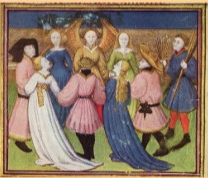
🔍 AmpliarLAS MIL Y UNA NOCHES
La obra más famosa, y una de las más célebres de la literatura universal, es la recopilación de cuentos Las mil y una noches tomada de la literatura árabe.
Es una compilación de relatos con intención lúdica, a diferencia de la tendencia europea que solía dar un enfoque pedagógico a los cuentos. Recoge una gran variedad de historias de aventuras, magia, bandidos, amores y en bastantes ocasiones con un notable componente sensual y erótico.
La obra no fue conocida en Europa hasta el s. XVIII, a partir de una traducción al francés, aunque su autoría data de fines del s. XIV.
Argumento
Su marco narrativo contiene la historia del sultán Shahriar, que ha sido engañado por su esposa y decide vengar esa infidelidad matando una mujer cada día. Así sucede hasta que le corresponde el turno a la joven Sherezade, (Shahrasad), hija del visir, quien consigue evitar la muerte gracias a una estratagema: todas las noches relata al sultán una historia que deja inacabada, por lo que es perdonada para continuarla a la noche siguiente. Enlazando un cuento con otro, Sherezade sobrevive durante mil y una noches (número que simboliza la eternidad). Así la muchacha entretiene la atención del rey durante mil y una noches. En recompensa, el rey, al que ya había dado tres hijos, reconoce sus servicios, interrumpe su costumbre cruel y la hace su esposa favorita. Finalmente, se le perdona la vida.
Características
• Trama central que actúa como marco: Sherezade se libra de la muerte a manos del rey gracias a contarle cuentos que deja interrumpidos al amanecer para poder seguir con vida a la noche siguiente.
• Técnica de la suspensión: interrumpir los relatos en un punto álgido de la acción hace que aumente el interés del rey (y de los lectores) por saber cómo acaba la historia.
• Estructura de “cajas chinas”: diversos niveles de profundidad, pues dentro de las historias a su vez se narran otras historias.
• Acumulación de diversos relatos de muy diversas procedencias: árabes, persas, indios, egipcios...
LOS CUENTOS DE CANTERBURY
Argumento
El autor nos sitúa en la posada de El Tabardo, donde ha hecho un alto para descansar de su peregrinación hacia la abadía de Santo Tomás de Canterbury. Allí se encuentra con otros veintinueve peregrinos: un caballero, con su hijo, su escudero y su asistente; una priora y un fraile mendicante; un mercader; un estudiante de Oxford y diversos representantes de oficios -mercero, carpintero, tejedor, tintorero, tapicero, entre otros- a los que retrata en el prólogo.
Todos aceptan la invitación del hostelero, a quien se le ocurre que, para entretenerse en el camino, cada uno de ellos narre dos cuentos a la ida y dos a la vuelta; el mismo hostelero será el árbitro y juez, y premiará con una cena al narrador del mejor de los cuentos.
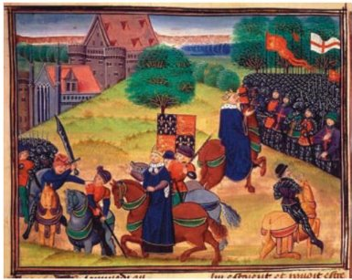
🔍 Ampliar MiniaturaCaracterísticas
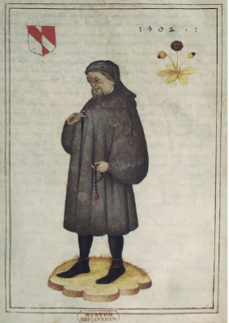
🔍 Ampliar Retrato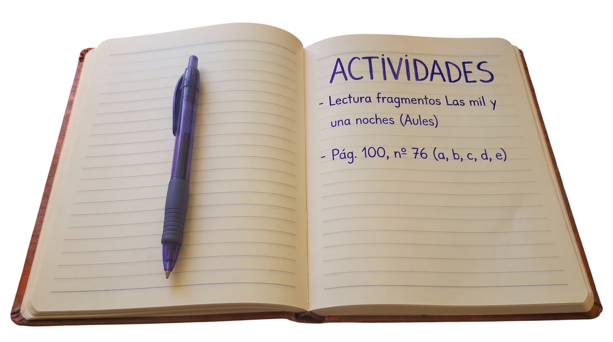
Lectura: fragmentos seleccionados de Las mil y una noches (material disponible en la plataforma Aules).
Página 100: ejercicio nº 76 (apartados a, b, c, d, e) — lectura y comentario de los relatos de Geoffrey Chaucer (Los cuentos de Canterbury) y Giovanni Boccaccio (Decamerón).
El teatro medieval no entronca con el teatro clásico, sino que aparece, de forma semejante a lo que ocurrió en la antigua Grecia, ligado a las celebraciones religiosas, en este caso, a la liturgia cristiana:
Así pues, las obras que se representan en la Edad Media presentan un doble carácter, religioso y profano. Al primero pertenecen los misterios y los milagros; al segundo, las farsas y las danzas de la muerte.
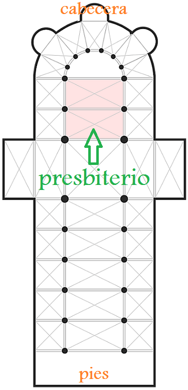
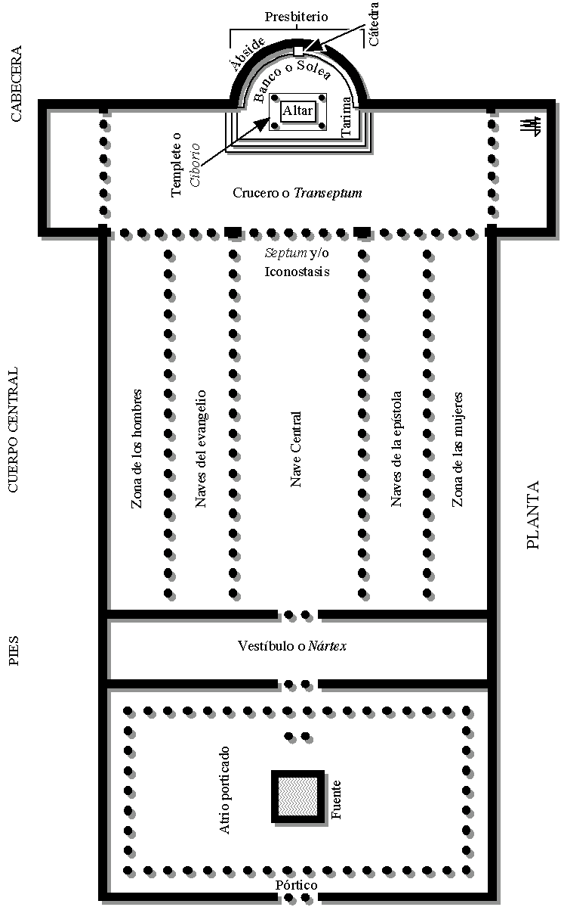
🔍 Ampliar PlantaTEATRO RELIGIOSO MEDIEVAL
El teatro religioso, en el que se permitía la participación de los clérigos ofrece dos tipos de representación:
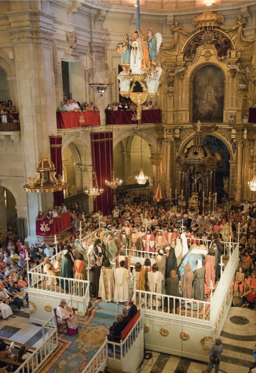
🔍 Ampliar Misteri d'ElxTEATRO RELIGIOSO MEDIEVAL
LAS DANZAS DE LA MUERTE
Las danzas de la muerte, generalizadas en la Europa de siglo XIV, son representaciones artísticas y literarias en las que figura una danza macabra integrada por personajes de diferente condición, jerarquía o edad que, interpelados por la muerte, se ven empujados a entrar en su fúnebre cortejo.
La aparición de estas obras, fruto del sentido religioso de la Edad Media, puede deberse a dos causas:
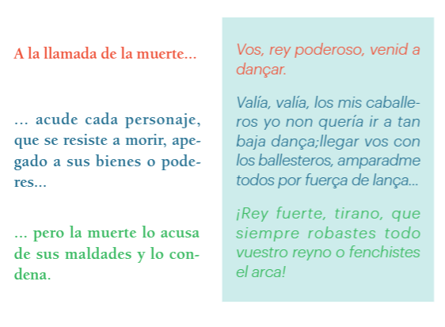
🔍 Ampliar Estructura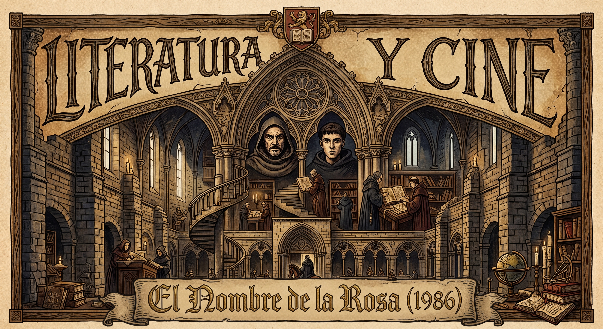
🔍 Ampliar Cartel